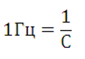
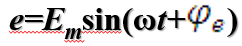
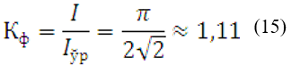

Reja:
1. ЎЗГАРУВЧАН ТОК ТУРЛАРИ
2. СИНУСОИДАЛ ЎЗГАРУВЧАН ЭЮКни ҲОСИЛ ҚИЛИШ.
3. СИНУСОИДАЛ ЎЗГАРУВЧАН ФУНКЦИЯНИ ХАРАКТЕРЛОВЧИ КАТТАЛИКЛАР
4. СИНУСОИДАЛ ЎЗГАРУВЧАН ФУНКЦИЯНИНГ ТАЪСИР ЭТУВЧИ ВА ЎРТАЧА ҚИЙМАТЛАРИ
5. СИНУСОИДАЛ ЎЗГАРУВЧИ КАТТАЛИКЛАРНИ
6. АЙЛАНУВЧАН ВЕКТОРЛАР ЁРДАМИДА ИФОДАЛАШ
Йўналиши ва қиймати даврий равишда ўзгариб турадиган ҳар қандай ток ўзгарувчан ток дейилади.
Ўзгарувчан токвақт бўйича маълум қонун асосида ўзгаради, яъни токнинг қиймати вақтнинг
функциясидир.
Шунингдек, электромагнит энергиясини бир турдан бошқа турга айлантиришнинг барча физикавий жараёнлари
ҳозирги замон электротехникаси барча соҳалари (электр машиналар, радиотехника, алока,
электроавтоматика,ярим ўтказгичлар, ҳисоблаш техникаси ва бошқалар)нинг асосини ташкил этади. Айрим
электр қурилмаларда эса қиймати даврий равишда ўзгарувчи токлар ишлатилади. Бундайт оклар
пульсацияланувчи токлар дейилади (1- расм, а—в).
Умуман ўзгарувчан токни шартли равишда учта турга бўлиш мумкин:
1) қиймати ўзгарувчан, аммо йўналиши ўзгармас ток (1-расм. а—в)
2) қиймати ва йўналиши ўзгарувчан ток(1- расм, г-е)
3) даврий ўзгарувчан ток (1 -расм, в—е)
Саноатда ва турмушда фойдаланиладиган ўзгарувчан ток синусоидал қонун бўйича ўзгарадиган ўзгарувчан
токдир (1-расм, е).
Бу токни юқори кучланиш билан узоқ масофаларга узатиш ҳамда ўзгарувчан токда ишловчи машина ва
аппаратлар (трансформаторлар, асинхром ва синхрон двигателлар) ни ишга туширищда ишлатиш мумкин.
Синусоидал қонун бўйича ўзгарадиган ЭЮК, кучланиш ва токлар синусоидал ўзгарувчан катталиклар
ҳисобланади.
Синусоидал ўзгарувчан катталиклар бўлмиш ЭЮК, кучланиш, ток ва қувватларнинг ихтиёрий вақт
лаҳзасидаги қийматлари оний қийматлар дейилиб, е, и, i, р ҳарфлари билан белгиланади.
Шy оний қийматларнинг давр ичидаги энг каттаси максимал ёки амплитуда қийматлар дейилиб, E
m, Um, Im, pm
ҳарфлари билан белгиланади (1- расм, е).
Синусоидал ўзгарувчан катгаликларнинг таъсир этувчи (эффектив) ва ўртача қийматлари (батафсил
кейинроқ
кўриб чиқилади) тегишлича Е, U, I, р ва Еўр, Uўр, Iўр,
рўр ҳарфлари билан белгиланади.
Синусоидал ўзгарувчан ток, асосан, электростанцияларда буғ ва гидравлик турбинали генераторлар
ёрдамида
ҳосил қилинади. Мазкур генераторларнинг ишлаши эса электромагнит индукцияси ва электромагнит куч
қонунларига асосланган.
Ўзгарувчан ток генератори иккита асосий қисмдан, яъни айланувчан ротор (электромагнит) ва қўзғалмас
статордан иборат (2- расм).
Стагорнинг пазларига мис чулғамлар жойлаштирилган (чулғамнинг битта “а-х” ўрами 2-расм, а да
кўрсатилган, бунда а—ўрамнинг бош учи, х -охирги учи).
Ротор ўзгармас магнит ёки электромагнитнинг бир тури ҳисобланиб, генераторнинг асосий магнит
майдонини ҳосил қилиш учун хизмат қилади.
Кучли генераторларнинг ротори электромагнит режимида ишлайди, бунда у ҳосил қилган магнит
майдонининг магнит оқимини бошқариш мумкин.
Ротор ўзгармас ω бурчак тезлик билан айланганда унинг магнит куч чизиқлари ҳар бир паздаги
ўтказгичда
қиймати е=Blv га тенг бўлган ЭЮК ни ҳосил қилади (индукцияланади).
Бунда В—магнит индукцияси, (Вб/м2)=Тл;
l—ўтказгичнинг актив узунлиги, м;
v —ўтказгичнинг нисбий ҳаракат тезлиги, м/с.
е нинг ўзгариш характери роторнинг қутби билан статор оралигидаги магнит индукциясининг тақсимЛаниш
қонунига асосланади. Синусоидал ўзгарувчан ЭЮК ни ҳосил қилиш учун роторнинг магнит қутбларига махсус
конструктив шакл берилади.
Бунда статор билан қутб орасидаги ҳаво бўшлиғи қутбнинг ўртасида минимал бўлиб, унинг чеккаси томон
катталаша боради.
Бунда ҳаволи оралиқдаги муҳитнинг магнит қаршилиги бир хил бўлмаслиги туфайли магнит индукцияси
қутбнинг
ўртасида, яъни оралиқ минимал бўлган жойда максимал қийматга эга бўлиб, унинг чеккаси томон синусоидал
қонун бўйича текис камая боради. Магнит индукциясининг бундай тақсимоти
3-расмда кўрсатилган.
Энди а—х ўрамида индукцияланган ЭЮК нинг ротор ҳолатига боғлиқлигини кўриб чикайлик.
Агар роторнинг 2-расм, а да кўрсатилган горизонтал ҳолатини бошланғич вақт t=0 билан белгиласак,
а—хўрами жойлашган ерда магнит индукцияси В=О бўлгани учун унда индукцияланган ЭЮК нолга тенг бўлади.
Қандайдир t вақтда ротор
α=ωt бурчакка бурилганда (2-расм,б) а—х ўрамининг стерженлари (ўтказгичлари) жойлашган ерда магнит
индукцияси В=Вmsinα бўлгани учун битта стерженда индукцияланган ЭЮК:
е' = Bmlv sinα
У ҳолда ўрамда индукциялацган ЭЮК:
е =2е' = 2Bmlvsin α (1)
Ўнг қўл қоидасини қўллаш билан ўрамда индукцияланган ЭЮК нйнг йўналишини аниқлаш мумкин. Ўрамнинг юқори
кесимидаги ○ ишора унда индукцияланган ЭЮК шартли йўналишининг бошланишини (найзанинг думи), пастки
кесимидаги ишора ○ эса (найзанинг бош учи) охирини билдиради.
Ротор ўзининг бошланғич ҳолатига нисбатан 90° га бурилганда (2-расм, в) а —х ўрамининг стерженлари
жойлашган ерда магнит индукцияси В=Вт бўлиб, индукцияланган ЭЮК ҳам ўзининг максимал қийматига эришади:
Em=2Bml v (2)
Агар α = ωt эканлиги ҳисобга олинса, (1), (2) формулалардан индукцияланаётган ЭЮК нинг синусоидал
қонун
бўйича ўзгарлшини ифодаловчи қуйидаги формула ҳосил қилинади.
е = Еmsinωt (3)
бу ерда:
ω—ўзгарувчан токнинг бурчак частотаси.
4 - раcмдаги графикда роторнинг тўлиқ бир марта айланишида синусоидал ЭЮК нинг ўзгариши кўрсатилган.
Агар а—х ўрамнинг қисмаларига бирор нагрузка уласак, занжир бўйлаб:
i = Imsin ωt (4)
ток ўта бошлайди. Бу вақтда а—х ўрамининг қисмаларидагикучланиш:
u = Umsin ω t (5)
Синусоидал ўзгарувчан кучланиш ва ток учун ҳам 4-расмдагига ўхшаш графикларни чизиш мумкин.
Синусоидал қонун бўйича ўзгарувчи функциянинг амплитудаси, даври (ёки частотаси) ва фазаси мазкур
функцияни характерловчи катталиклар ҳисобланади. Синусоидал ўзгарувчан функциянинг амплитуда қиймати
деб, унинг мусбат ва манфий ярим даврларда эришган энг катта қийматларига айтилади. ЭЮК, кучланищ ва
токнинг амплитуда кийматлари (3),(4), (5) ифодаларда тегишлича Еm, Um ва
lm билан белгиланган.
4-расмдаги графикда ЭЮК нинг амплитуда қиймати Еm билан белгиланган.
2- раcм, а даги генераторнинг а—х ўрамида индукцияланган ЭЮК нинг тўлиқ бир марта ўзгариши учун
кетган
вақт Т унинг даври дейилади.
Даврга тескари бўлган катталик
токнинг частотаси, дейилади.
Частота герцда ўлчанади

Электротехникада ўзгарувчан токнинг стандарт частотаси сифатида Ҳамдўстлик ва Европа мамлакатларида 50
Гц,
АҚШ да ҳамда Осиё ва Африкадаги айрим мамлакатларда 60 Гц қабул қилинган.
Электротехник қурилмалар учун асосий частота сифатида 50/60 Гц ишлатилиши қуйидагиларга боғлиқ.
Частотанинг 50-60 Гц дан кичик қийматларида электр машиналар ва трансформаторларнинг таннархи
ортади.
Шунингдек, электр лампочкалар ёруғлигининг липиллаши кўзга сезиларли бўлиб қолади. Частотани 50 Гц
дан
бир мунча орттириш электр машиналарда энергия исрофининг ортишига сабаб бўлиб, ҳосил бўладиган
ўзиидукция ЭЮК ва электр, сиғими ҳодисалари ўзгарувчан ток қурилмаларининг ишига салбий таъсир қилади.
50 Гц частотали ўзгарувчан токни ҳосил қилиш (ёки синусоидал, ўзгарувчан ЭЮК ҳосил қилиш) учун 2- расм,
а даги икки қутбли ўзгарувчан ток генераторининг роторини
тезлик билан айлантириш керак.
Бу ерда: 60 — секунддан минутга ўтиш коэффициенти;
P —ротормагнит майдонининг жуфт қутблари сони.
Ротори буг турбиналари ёрдамида катта тезлик билан айланадиган турбогенераторларнинг магнит
қутблари бир
жуфтли бўлади. Роторининг айланиш тезлиги нисбатан кичик бўлган гидравлик турбиналарда эса кўп қутбли
генераторлардан фойдаланилади.
Синусоидал ўзгарувчан функцияни характерловчи катталиклардан яна бири унинг фазасидир.
Фаза-бирон t=0 вақтда статор чулғамлари ўрамларининг роторнинг магнит куч чизикларига нисбатан
ҳолатидир. Шунинг учун ана шу t=0 пайтда чулғамларда индукцияланган ЭЮК нинг қийматини билиш аҳамиятга
эга. У ҳолда 2-расм, б даги роторнинг ҳолатига мос ўрамда индукцияланган ЭЮК

формула билан ифодаланади.
Унга мос график эса 5-расмдакўрсатилган.
ифодадаги ω синусоидал ўзгарувчан функциянинг бурчак частотаси ўлиб, радиан/секундда ўлчанади. Бу
катталик синусоидал ўзгарувчан функциянинг бир секундда неча радиан ўзгаришини кўрсатади. Масалан, f=50
Гц бўлганда
Графикда бошланғич фаза бурчаги ф нинг қиймати синусоиданинг координата бошидаги ҳолати билан
аникданади. Синусоидал ўзгарувчан функциянинг ноль қийматлардан мусбат қийматларга ўтиш нуқтаси даврнинг
бошланиш лаҳзаси ҳисобланади. Мусбат бошланғич фаза координата бошидан чап томонга, манфийси унг томонга
қўйилади. Масалан, турлича бошланғич фазага эга бўлган иккита синусоидал ўзгарувчан функция
Шу даврда R қаршиликдан ўтган синусоидал ток
i=Imsinωt таъсиридан ажралиб чиққан иссиқлик миқдори эса
Иккала ток иссиклик таъсирининг эквивалентлик шарти Q_= Q˷ га биноан
Демак, синусоидал ўзгарувчан токнинг таъсир этувчи қиймати унинг максимал қийматидан марта кичикдир.
Юқоридагига ўхшаш йўл билан синусоидал ўзгарувчан ЭЮК ва кучланишларнинг ҳам таъсир этувчи қийматларини
ёза оламиз:
Ўзгарувчан ток занжиридаги барча ўлчов асбоблари синусоидал катталикларнинг таъсир этувчи қийматларини
ўлчашга мўлжалланган. Синусоидал катталикларнинг таъсир этувчи қийматлари ўзгарувчан ва ўзгармас ток
занжирлари орасидаги асосий қонуниятларни бошлашда ўхшаш математик ифодалар олинишига имкон беради.
Синусоидал катталикларнинг ўртача қиймати. Баъзан электр занжирларинииг ва ўзгарувчан ток
қурилмаларининг ишлаши таҳлил килинганда синусоидал ўзгарувчан катталикларнинг ўртача кийматини аниқлаш
керак бўлади. Умуман,синусоидал катталикларнинг давр ичидаги ўртача қиймати нолга тенг бўлганидан унинг
мусбат ярим даврдаги ўртача қиймати инобатга олинади (7-расм). У ҳолда ток i = Im sin ωt нинг
ўртача
қиймати:
Демак, синусоидал токнинг ўртача қиймати мусбат ярим даврдаги оний токлар йиғиндисининг ўртача арифметик
кийматига тенг. Юқоридагига ўхшаш йўл билан ЭЮК ва кучланишнинг ҳам ўртача қийматларини топиш мумкин:
Ўзгарувчан ток таъсир этувчи қийматининг унинг ўргача қийматига нисбати (I/Iўр) синусоида
шаклининг
коэффициенти Кф ни ифодалайди:

Олинган нисбат синусоидал ўзгарувчан катталикларнинг ўртача қийматлари маълум бўлса, уларнинг таъсир
этувчи қийматларини анйқлашга ва аксинча, таъсир этувчи қийматлари маълум бўлса, ўртача қийматларини
аниқлашга имкон беради:
I=1,11Iўр; E=1,11Eўр; U=1,11Uўр;
Вектор диаграммалар. Ўзгарувчан ток занжирлари назариясини ўрганишда ва занжирдаги жараёнларни
текширишда, баъзан, турли амплитуда ва бошланғич фазага эга бўлган бир хил частотали синусоидал
миқдорларни қўшиш ёки айириш керак бўлади. Бу масалани аналитик ва графикавий усулларда, шунингдек
айланувчан векторлар ёрдамида ҳал этиш мумкин.
Кўриниб турибдики, тенг таъсир этувчи ток i ҳам ўша частотада синусоидал қонун бўйнча ўзгаряпти.
Қўшилувчилар сони орта борган сари тенг таъсир этувчи токни тригонометрик алмаштиришлар йўли билан
аниқлаш тобора мураккаблашади. Шунинг учун, бу усулни амалий ҳисоблашлар учун қўллаб бўлмайди. Бу
токларнинг тенг таъсир этувчисини тўғри бурчакли координаталар системасида график тарзда аниқлаш учун
уларнинг ординаталарини қўшиб чиқиш керак (8-раcм), бу усул ҳам кўп меҳнат талаб қилиб, аниқ натижа
бермайди.
Берилган синусоидал катталикларнинг сонидан қатъи назар уларнинг йигиндиси ёки айирмасини айланувчи
векторлар ёрдамида аниқлаш амалий жиҳатдан қулай ҳисобланади.
Бунда бурчак частогасига эга бўлган синусоидал ЭЮК кучланиш ва токлар тўғри бурчакли координаталар
системасида бурчак тезликка тенг бўлган айланувчан векторлар тарзида ифодаланади. Айланувчан
радиус-векторнинг узунлиги синусоидал катталикларнинг амплитуда (ёки эффектив) қийматига тенг қилиб,
Синусоидал катталиклар сони бирдан ортиқ бўлганда улардан қайси бирини бошланғич вектор (ёки фаза)
учун кабул қилиш ихтиёрий, аммо қолган векторлар бошланғич векторга нисбатан фазалар фаркига кўра
жойлашиши керак.
Йўналишларининг ўзгариши назарий механикадаги каби фазовий бўлмасдан, вақтга қараб ўзгаради. Аммо
уларни қўшиш ва айирши оддий векторлар каби бажарилади. Уларнинг модуллари тегишли амплитуда қийматларни
ифодаласа, йўналншлари орасидаги бурчаклар эса берилган синусоидал катталикларнинг (вақт бўйича) фаза
силжишини ифодалайди.
Бошланғич фазаси мусбат бўлган вектор координата бошида соат мили ҳаракатига тескари йўналишда,
манфийси эсасоат милининг ҳаракати йўналишида қўйилиши керак.
Кўпинча вектор диаграммаларда айланувчан векторларнинг узунлиги синусоидал миқдорларнинг амплитуда
қийматига тенг бўлмасдан, балки унинг таъсир этувчи қийматини ифодалайди.
Умуман, вектор диаграмма, деб тўғри бурчакли координаталар системасида бир-бирларига нисбатан тўғри
ориентацияларда қурилган, турли амплитуда ва бошланғич фазага эга бўлган бир хил частотадаги синусоидал
миқдорларни характерловчи векторлар йиғиндисига айтилади.